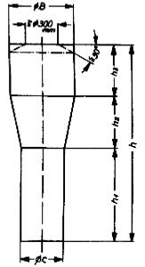
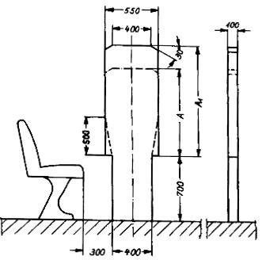

- 1
Einteilung der Kraftomnibusse
Es werden unterschieden
- 1.1
Kraftomnibusse mit Stehplätzen
- 1.1.1
mit mehr als 16 Fahrgastplätzen
- 1.1.2
mit bis zu 16 Fahrgastplätzen
- 1.2
Kraftomnibusse ohne Stehplätze
- 1.2.1
mit mehr als 16 Fahrgastplätzen
- 1.2.2
mit bis zu 16 Fahrgastplätzen
- 2
Gänge und Innenraumhöhe über Plattformen
Gang ist der Bereich im Innenraum von Kraftomnibussen, der mehr als 400 mm von den Fahrgasttüren entfernt ist. Er muss den Fahrgästen den Zugang zu jedem Sitz/jeder Sitzreihe ermöglichen.
Der Gang umfasst nicht den bis zu 300 mm tiefen Raum vor einem Sitz/einer Sitzreihe, der für die Füße der sitzenden Fahrgäste bestimmt ist, sowie den Raum vor der letzten Sitzreihe oder Sitzbank, der nur von denjenigen Fahrgästen benutzt wird, die diese Sitze einnehmen.
|  |
Der Gang muss so ausgelegt sein, dass der freie Durchlass der nebenstehend abgebildeten Messvorrichtung möglich ist.
Sitze im Bereich der vorderen Fahrgasttüren (§ 35b Abs. 2) dürfen zur Prüfung weggeklappt werden, soweit dies einfach und ohne großen Kraftaufwand möglich und die Betätigungsart klar ersichtlich ist.
Die Messvorrichtung muss bei der Prüfung senkrecht geführt werden. |
Die Abmessungen der Messvorrichtung sind der Tabelle zu entnehmen. Die Innenraumhöhe über Plattformen muss der für den Gang geforderten Mindesthöhe (Gesamthöhe der Messvorrichtung) entsprechen.
| Abmessungen der Messvorrichtung [mm] | Kraftomnibusse mit Stehplätzen | Kraftomnibusse ohne Stehplätze |
|---|
| mit mehr als 16 Fahrgastplätzen (vgl. 1.1.1) | mit bis zu 16 Fahrgastplätzen (vgl. 1.1.2) | mit mehr als 16 Fahrgastplätzen (vgl. 1.2.1) | mit bis zu 16 Fahrgastplätzen (vgl. 1.2.2) |
|---|
| Höhe des unteren Zylinders | h1 |
| 900 | 900 | 900 | 900 |
| 500 | 500 | 500 (350)3) | 300 |
| Höhe des oberen Zylinders | h3 |
| 500 (400)2) | 500 | 400 | 300 |
| Durchmesser des unteren Zylinders | C |
| 350 | 350 | 300 (220)4) | 300 |
| Durchmesser des oberen Zylinders | B1) |
| 550 | 550 | 450 | 450 |
| Gesamthöhe der Messvorrichtung | h |
| 1 900 (1 800)2) | 1 900 | 1 800 (1 650)3) | 1 500 |
Erläuterungen:- Der Durchmesser der Abschrägung am oberen Ende des Zylinders muss mindestens 300 mm betragen, die Abschrägung darf 30° nicht überschreiten.
- Reduzierung möglich bei Kraftomnibussen mit Heckmotor für den Teil des Gangs hinter der Hinterachse bzw. hinter einer hinter dieser Achse befindlichen Fahrgasttür und bei Eineinhalbdeck- und Doppeldeck-Kraftomnibussen für den zweistöckigen Fahrzeugteil.
- Reduzierung möglich bei Eineinhalbdeck- und Doppeldeck-Kraftomnibussen für den Gang zur Heckbank des Unterdecks und im Oberdeck.
- 220 mm bei seitlich bewegbaren Sitzen.
Bei ausgefahrenen Sitzen muss ein Fußraum mit den lichten Maßen von 350 mm in der Breite und 200 mm in der Höhe vorhanden sein. Die Sitze müssen sich auch in belastetem Zustand von einer erwachsenen Person mit vertretbarem Kraftaufwand verstellen lassen.
|
Bei Gelenk-Kraftomnibussen muss die Messvorrichtung auch den Gelenkabschnitt in allen möglichen Betriebsstellungen der Fahrzeuge unbehindert passieren können.
- 3
Fahrgastsitze
- 3.1
Sitzmaße
Die Abmessungen für jeden Sitzplatz müssen den in der nachfolgenden Aufstellung und in der Skizze zusammengefassten Abmessungen entsprechen. Alle Maße beziehen sich auf unbelastete Sitz- und Lehnenpolster.
Breite des Sitzpolsters auf jeder Seite –
gemessen ab einer durch die Mitte des betreffenden Sitzes verlaufenden Vertikalebene | F≧ | 200 mm für Einzelsitze
und für Sitzbänke
für zwei oder mehr Fahrgäste |
Breite des verfügbaren Raumes –
gemessen in einer Horizontalebene entlang der Rückenlehne des Sitzes in einer Höhe zwischen 270 und 650 mm
über dem Sitzpolster | G≧
G≧ | 250 mm für Einzelsitze
225 mm für Sitzbänke
für zwei oder mehr Fahrgäste |
Höhe des Sitzpolsters bezogen auf den Boden
unter den Füßen des Fahrgastes –
gemessen vom Boden bis zu einer horizontalen Ebene, die die Oberfläche des höchsten Punktes des Sitzpolsters berührt | I = | 400 ... 500 mm
bei Radkästen
ist eine Verringerung
bis auf 350 mm möglich. |
Tiefe des Sitzpolsters –
Abstand zwischen zwei Vertikalebenen, die die Vorderkante des Sitzpolsters berühren –
gemessen in einer horizontalen Ebene, die die Oberfläche
des höchsten Punktes des Sitzpolsters berührt | K≧ | 350 mm |
- 3.2
Freiraum
Um dem Fahrgast die nötige Bewegungsfreiheit zu gewährleisten, muss der Bereich über dem unbelasteten Sitzpolster eine freie Höhe von 900 mm aufweisen. Außerdem muss der Abstand gemessen vom Boden
- a)
im Bereich oberhalb der Sitzfläche,
- b)
im Bereich oberhalb der Rückenlehne und
- c)
im Bereich oberhalb des Fußraums des sitzenden Fahrgastes (bis 300 mm vor der Vorderkante des Sitzes)
mindestens 1 350 mm betragen.
In den Bereich oberhalb des Fußraums darf die Rückenlehne eines Sitzes hineinragen.
Geringfügige Einschränkungen des Freiraums (zum Beispiel für Leitungskanäle) sind zulässig.
- 3.3
Zwischenabstand der Sitze
Unbelastete Sitz- und Lehnenpolster müssen den nachfolgend angegebenen Maßen entsprechen; dabei muss in einer durch die Mitte des einzelnen Sitzplatzes verlaufenden Vertikalebene gemessen werden.
gleichgerichtete Sitze:
Abstand zwischen der Vorderseite der Rückenlehne eines Sitzes und der Rückseite der Rückenlehne davor –
gemessen in der Horizontalen und in jeder Höhe zwischen der Oberfläche des Sitzpolsters und einer Höhe von 620 mm über dem Boden |
H1≧ 650 mm |
quergestellte, einander gegenüber angeordnete Sitze:
Abstand zwischen den Vorderseiten der Rückenlehnen –
gemessen in Querrichtung im höchsten Punkt der Sitzpolster |
H2≧ 1 300 mm |
- 3.4
Sitze hinter Trennwänden
Bei Sitzen hinter einer festen Trennwand muss zwischen dieser und der Vorderseite der Rückenlehne – gemessen in einer horizontalen Ebene, die die Oberfläche des nächsten Punktes des Sitzpolsters berührt – ein freier Abstand von mindestens 630 mm vorhanden sein.
Im Bereich vom Boden bis zu einer Ebene, die 150 mm höher ist, muss der Abstand zwischen der Trennwand und dem Sitz mindestens 350 mm betragen (siehe Abbildung). Dieser Freiraum kann durch Einrichtung einer Nische in der Trennwand oder durch Rückwärtsverlagerung des Unterteils des Sitzes oder durch eine Kombination dieser beiden Möglichkeiten geschaffen werden. Wird ein Freiraum unter dem Sitz vorgesehen, so soll dieser aufwärts über die 150-mm-Ebene hinaus entlang der den vorderen Rand des Sitzaufbaus berührenden und unmittelbar unterhalb der Vorderkante des Sitzpolsters verlaufenden geneigten Ebene weitergeführt werden.
- 3.5
Sitze in Längsrichtung
Sitze in Längsrichtung sind zulässig. Für die Sitze, wie Sitz- und Lehnenpolster, sind dieselben Mindestabmessungen, wie in Nummer 3.1 angegeben und dargestellt anzuwenden. Der Freiraum über den Sitzen ist gemäß Nummer 3.2 einzuhalten.
Am Beginn und Ende von Sitzbänken sowie nach jeweils zwei Sitzen müssen Armlehnen oder sonstige Halteeinrichtungen angebracht werden, die keine scharfen Kanten aufweisen und abgepolstert sind.
- 4
Abmessungen der Fahrgasttüren und des Bereichs bis zum Beginn des Gangs
- 4.1
Die Fahrgasttüren müssen die nachfolgend angegebenen Mindestabmessungen haben.
Geringfügige Abrundungen oder Einschränkungen an den oberen Ecken sind zulässig.
- 4.1.1
Lichte Weite
- a)
650 mm bei Einzeltüren,
- b)
1 200 mm bei Doppeltüren.
Diese Abmessungen dürfen um bis zu 100 mm in Höhe von Handgriffen oder Handläufen unterschritten werden. Bei Kraftomnibussen mit bis zu 16 Fahrgastplätzen ist eine Verminderung um bis zu 250 mm zulässig an Stellen, bei denen Radkästen in den Freiraum eindringen oder der Türantrieb angeordnet ist.
- 4.1.2
Lichte Höhe
- a)
1 800 mm bei Kraftomnibussen mit Stehplätzen,
- b)
1 650 mm bei Kraftomnibussen ohne Stehplätze mit mehr als 16 Fahrgastplätzen,
- c)
1 500 mm bei Kraftomnibussen ohne Stehplätze mit bis zu 16 Fahrgastplätzen.
- 4.2
Der Bereich ab der Seitenwand, in die die Fahrgasttüren eingebaut sind, ist bis zu 400 mm nach innen (Beginn des Gangs) so zu gestalten, dass der freie Durchlass der nachfolgend dargestellten Messvorrichtungen möglich ist.
- 4.2.1
Messvorrichtung für Kraftomnibusse mit Stehplätzen und für Kraftomnibusse ohne Stehplätze mit mehr als 16 Fahrgastplätzen (Maße in mm)

Im Falle der Benutzung der Messvorrichtung mit A = 1 100 mm und A
1 = 1 200 mm bei Kraftomnibussen nach Nummer 1.1 und 1.2.1 kann alternativ ein konischer Übergang mit 500 mm Höhe und der Breite 400 mm auf 550 mm gewählt werden.
Maße für
A und A1
[mm] | Kraftomnibusse mit Stehplätzen
(vgl. 1.1.1 und 1.1.2) | Kraftomnibusse ohne Stehplätze
mit mehr als 16 Fahrgastplätzen
(vgl. 1.2.1) |
|---|
| A | 1 100 | 950 |
| A11) | 1 2002) | 1 100 |
- Maß A1 400 mm hinter der Türöffnung (siehe 4.3).
- Reduzierung auf 1 100 mm bei Eineinhalbdeck- und Doppeldeck-Kraftomnibussen für den zweistöckigen Fahrzeugteil möglich.
- 4.2.2
Messvorrichtung für Kraftomnibusse ohne Stehplätze mit bis zu 16 Fahrgastplätzen (Maße in mm)

| | Verschieben der unteren Platte
nach rechts oder links innerhalb
der Außenkanten der oberen
Platte möglich | Beispiel für eine verschobene untere Platte:
es ist die bei Verschiebung nach links maximal zulässige Stellung dargestellt |
- 4.3
Die jeweilige Messvorrichtung muss aufrecht stehend von der Ausgangsposition aus parallel zur Türöffnung geführt werden, bis die erste Stufe erreicht ist. Die Ausgangsposition ist die Stelle, wo die dem Fahrzeuginneren zugewandte Seite der Messvorrichtung die äußerste Kante der Tür berührt. Danach ist sie rechtwinklig zur wahrscheinlichen Bewegungsrichtung einer den Einstieg benutzenden Person zu bewegen. Wenn die Mittellinie der Messvorrichtung 400 mm von der Ausgangsposition zurückgelegt hat, ist bei Kraftomnibussen mit Stehplätzen und bei Kraftomnibussen ohne Stehplätze mit mehr als 16 Fahrgastplätzen die Höhe der oberen Platte vom Maß A auf das Maß A1 zu vergrößern. Bei Kraftomnibussen ohne Stehplätze mit bis zu 16 Fahrgastplätzen ist A1 = A (= 700 mm).
Wenn die Messvorrichtung mehr als 400 mm zurücklegen muss, um den Fußboden (Gang) zu erreichen, ist sie so lange weiter vertikal und rechtwinklig zur wahrscheinlichen Bewegungsrichtung einer den Einstieg benutzenden Person fortzubewegen, bis die Messvorrichtung den Fußboden (Gang) berührt.
Ob die Bedingungen des Zugangs von der senkrechten Ebene der Messvorrichtung zum Gang hin eingehalten werden, ist mit Hilfe der für den Gang maßgebenden zylindrischen Messvorrichtung (siehe Nummer 2) zu prüfen. Dabei ist die Ausgangsposition für die zylindrische Messvorrichtung die Stelle, wo sie die Messvorrichtung nach Nummer 4 berührt.
Der freie Durchgangsspielraum für die Messvorrichtung darf den Bereich bis 300 mm vor einem Sitz und bis zur Höhe des höchsten Punktes des Sitzpolsters nicht beanspruchen.
Sitze im Bereich der vorderen Fahrgasttüren (§ 35b Absatz 2) dürfen zur Prüfung weggeklappt werden, soweit dies einfach und ohne großen Kraftaufwand möglich und die Betätigungsart klar ersichtlich ist.
- 5
Notausstiege
- 5.1
Notausstiege können sein:
- 5.1.1
Notfenster, ein von den Fahrgästen nur im Notfall als Ausstieg zu benutzendes Fenster, das nicht unbedingt verglast sein muss;
- 5.1.2
Notluke, eine Dachöffnung, die nur im Notfall dazu bestimmt ist, von den Fahrgästen als Ausstieg benutzt zu werden;
- 5.1.3
Nottür, eine Tür, die zusätzlich zu den Fahrgasttüren und einer Fahrzeugführertür vorhanden ist, von den Fahrgästen aber nur ausnahmsweise und insbesondere im Notfall als Ausstieg benutzt werden soll.
- 5.2
Mindestanzahl der Notausstiege
- 5.2.1
In Kraftomnibussen müssen Notausstiege vorhanden sein, deren Mindestanzahl nachstehender Tabelle zu entnehmen ist:
| | Notfenster oder Nottür je Fahrzeuglängsseite | Notluke | Notfenster oder Nottür an der Fahrzeugvorder- oder -rückseite |
|---|
| Kraftomnibusse mit bis zu 16 Fahrgastplätzen | 1 | 1 oder 1 |
| Kraftomnibusse mit bis zu 22 Fahrgastplätzen | 2 | 1 | 1 |
| Kraftomnibusse mit bis zu 35 Fahrgastplätzen | 2 | 1 | 1 |
| Kraftomnibusse mit bis zu 50 Fahrgastplätzen | 3 | 1 | 1 |
| Kraftomnibusse mit bis zu 80 Fahrgastplätzen | 3 | 2 | 2 |
| Kraftomnibusse mit mehr als 80 Fahrgastplätzen | 4 | 2 | 2 |
Alle weiteren Fenster und Türen (ausgenommen die Fahrgast- und Fahrzeugführertüren), die die Voraussetzungen für Notausstiege erfüllen, gelten ebenfalls als Notausstiege und sind gemäß § 35f Absatz 2 deutlich zu kennzeichnen.
- 5.2.2
Sonderbestimmungen
- 5.2.2.1
Bei Kraftomnibussen, die als Gelenkfahrzeug gebaut sind, ist jedes starre Teil des Fahrzeugs im Hinblick auf die Mindestanzahl der vorzusehenden Notausstiege als ein Einzelfahrzeug anzusehen; dabei ist die Anzahl der Fahrgastplätze vor und hinter dem Gelenk zugrunde zu legen. Für die Mindestanzahl der Notfenster und der Nottüren in der Fahrzeugvorder- oder -rückseite ist die Gesamtzahl der Fahrgastplätze des Kraftomnibusses maßgebend.
- 5.2.2.2
Bei Kraftomnibussen, die als sogenannte Eineinhalbdeck-Kraftomnibusse oder Doppeldeck-Kraftomnibusse gebaut sind (Beförderung der Fahrgäste auf zwei Ebenen), ist jedes Fahrzeugdeck im Hinblick auf die Mindestanzahl der vorzusehenden Notausstiege als ein Einzelfahrzeug anzusehen; dabei ist die Anzahl der Fahrgastplätze je Fahrzeugdeck zugrunde zu legen.
Für die Mindestanzahl der Notluken im Fahrzeugdach ist die Gesamtzahl der Fahrgastplätze des Kraftomnibusses maßgebend.
- 5.2.2.3
Können bei Kraftomnibussen nach Nummer 5.2.2.2 Notfenster oder Nottüren an der Fahrzeugvorder- oder -rückseite des Unterdecks aus konstruktiven Gründen nicht angebracht werden, sind für die Fahrgäste im Unterdeck ersatzweise andere Fluchtmöglichkeiten für den Notfall vorzusehen (zum Beispiel Luken im Zwischendeck, ausreichend bemessene Zugänge vom Unterdeck zum Oberdeck).
- 5.3
Mindestabmessungen der Notausstiege
- 5.3.1
Die verschiedenen Arten der Notausstiege müssen folgende Mindestabmessungen haben:
| | Höhe | Breite | Fläche | Bemerkungen |
|---|
| Notfenster | – | – | 0,4 m2 | In die Öffnungen muss ein
Rechteck von 0,5 m Höhe und
0,7 m Breite hineinpassen*) |
| Notluke | – | – | 0,4 m2 |
| Nottür | 1,25 m | 0,55 m | – | – |
- Für ein Notfenster in der Fahrzeugrückseite gelten die Bedingungen als erfüllt, wenn Öffnungen von 0,35 m Höhe und 1,55 m Breite bei Ausrundungsradien von 25 cm vorhanden sind.
- 5.3.2
Notfenster mit einer Fläche von 0,8 m2, in die ein Rechteck von 0,5 m Höhe und 1,4 m Breite hineinpasst, gelten im Sinne von Nummer 5.2.1 als zwei Notausstiege.
- 5.4
Anordnung und Zugänglichkeit der Notausstiege
- 5.4.1
Notfenster und Notluken sind in Längsrichtung der Kraftomnibusse gleichmäßig zu verteilen; ihre Anordnung ist auf die Lage der Fahrgastplätze abzustimmen.
- 5.4.2
Notfenster, Notluken und Nottüren müssen gut zugänglich sein. Der direkte Raum vor ihnen darf nur so weit eingeschränkt sein, dass für erwachsene Fahrgäste der ungehinderte Zugang zu den Notausstiegen gewährleistet ist.
- 5.5
Bauliche Anforderungen an Notausstiege
- 5.5.1
Notfenster
- 5.5.1.1
Notfenster müssen sich leicht und schnell öffnen, zerstören oder entfernen lassen.
- 5.5.1.2
Bei Notfenstern, die durch Zerschlagen der Scheiben (auch Doppelscheiben) geöffnet werden, müssen die Scheiben aus Einscheiben-Sicherheitsglas (vorgespanntes Glas) hergestellt sein. Für jedes dieser Notfenster muss eine Einschlagvorrichtung (zum Beispiel Nothammer) vorhanden sein.
- 5.5.1.3
Notfenster mit Scharnieren oder mit Auswerfeinrichtung müssen sich nach außen öffnen lassen.
- 5.5.2
Notluken
- 5.5.2.1
Notluken müssen sich von innen und von außen leicht und schnell öffnen oder entfernen lassen.
- 5.5.2.2
Notluken aus Einscheiben-Sicherheitsglas (vorgespanntes Glas) sind zulässig; in diesem Fall muss für jede der Notluken innen im Fahrzeug eine Einschlagvorrichtung (zum Beispiel Nothammer) vorhanden sein.
- 5.5.3
Nottüren
- 5.5.3.1
Nottüren dürfen weder als fremdkraftbetätigte Türen noch als Schiebetüren ausgeführt sein.
- 5.5.3.2
Die Nottüren müssen sich nach außen öffnen lassen und so beschaffen sein, dass selbst bei Verformung des Fahrzeugaufbaus durch einen Aufprall – ausgenommen einen Aufprall auf die Nottüren – nur eine geringe Gefahr des Verklemmens besteht.
- 5.5.3.3
Die Nottüren müssen sich von innen und von außen leicht öffnen lassen.
- 5.5.3.4
Dem Fahrzeugführer muss sinnfällig angezeigt werden, wenn Nottüren, die außerhalb seines direkten Einflussbereichs und Sichtfeldes liegen, geöffnet oder nicht vollständig geschlossen sind.
- 5.5.4
Eine Verriegelung der Notfenster, Notluken und Nottüren (zum Beispiel für das Parken) ist zulässig; es muss dann jedoch sichergestellt sein, dass sie stets von innen durch den normalen Öffnungsmechanismus zu öffnen sind.